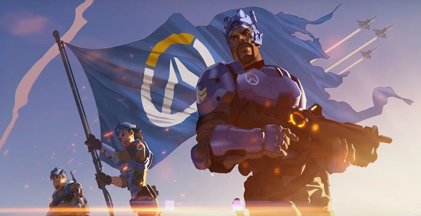
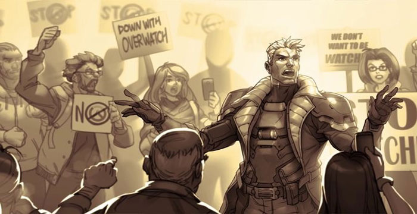

História
Overwatch se passa na Terra em um futuro próximo, anos após o fim da crise global Omnica. Esta crise colocou a humanidade sob a ameaça da inteligência artificial "Omnic" Isto levou à revolta dos robôs em todo o mundo e um grande conflito em escala global. Para por um fim a este conflito, uma força-tarefa internacional chamada "Overwatch" foi formada pelas Nações Unidas para proteger a humanidade e acabar com a crise. Nos anos que se seguiram, a Overwatch manteve-se como uma força de pacificação, mas após múltiplos incidentes de atividade criminosa terem surgido em todo o mundo, acusações de corrupção e de sedição começaram a surgir. As pessoas voltaram-se contra aqueles que as haviam salvado. Uma vez considerados heróis, os membros da Overwatch passaram a serem vistos com desconfiança. Então um dia, a sede da Overwatch de repente foi destruída, aparentemente, devido a um acidente. Oficialmente, o ataque tirou a vida do líder da Overwatch, Jack Morrison, e do segundo-em-comando, Gabriel Reyes. Após este evento, a força-tarefa foi finalmente dissolvida. Alguns acreditam que a causa da queda da Overwatch foi devido, na verdade, a uma elaborada conspiração por aqueles que queriam ver o fim da organização, embora nada tenha sido confirmado oficialmente pela ONU.

